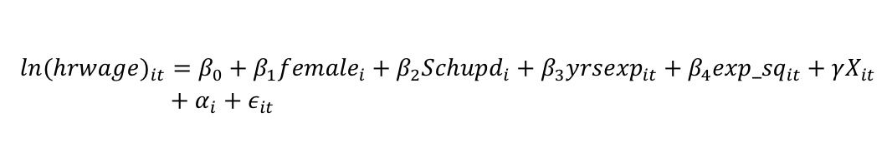
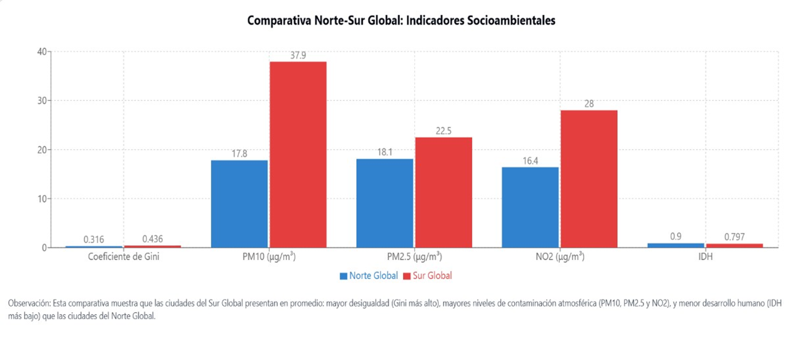

🌿 Eco‑RETINA: Inteligencia Artificial Verde para el Análisis Inmobiliario
He trabajado en un proyecto que conecta econometría, machine learning y Green AI como parte de mi TFG en Economía en la Universidad Complutense de Madrid.
Aplicando el algoritmo Eco‑RETINA, alineado con principios de Green AI, analicé el mercado de vivienda pública en Singapur (2017–2022), donde el tiempo es literalmente una variable económica.
- Elasticidad superficie ≈ 0,98 %.
- Relación polinómica cúbica entre años residuales y precio.
- Externalidades positivas por bloque (~0,46 % /m²).
- Altura del bloque influye negativamente en depreciación anual.

📈 Brecha Salarial de Género en EE.UU.
Este estudio replica y amplía el marco de Blau y Kahn (2017), incorporando variables para capturar heterogeneidades no observadas. Basado en datos PSID y CPS (1980–2010) y usando la fórmula extendida de Mincer.
- 📉 Brecha residual del 22% aun ajustando por variables clave.
- 🔍 Factores: segregación sectorial, penalización por experiencia, y disparidades regionales.
- 📐 Contraste de Hausman (χ² = 585.96) confirma robustez.
💡 Soluciones: auditorías salariales, corresponsabilidad parental, cuotas en sectores estratégicos. Inspirado por el enfoque de Claudia Goldin.
Basado en 33,398 observaciones PSID y 344,287 CPS.
🌍 Desigualdad, Desarrollo Humano y Contaminación Atmosférica
Este estudio explora cómo la desigualdad económica y el desarrollo humano afectan los niveles de PM10, PM2.5 y NO2 en ciudades de todo el mundo.
- Desigualdad: Asociada a mayor exposición y menor capacidad de respuesta.
- Desarrollo: Inicialmente aumenta la contaminación, pero luego puede mitigarse mediante mejores políticas.
- Latitud y clima: Determinan diferencias en concentración de contaminantes (NO2 especialmente).
“La tecnología sola no basta. La equidad y el desarrollo humano son clave para una sostenibilidad real.”